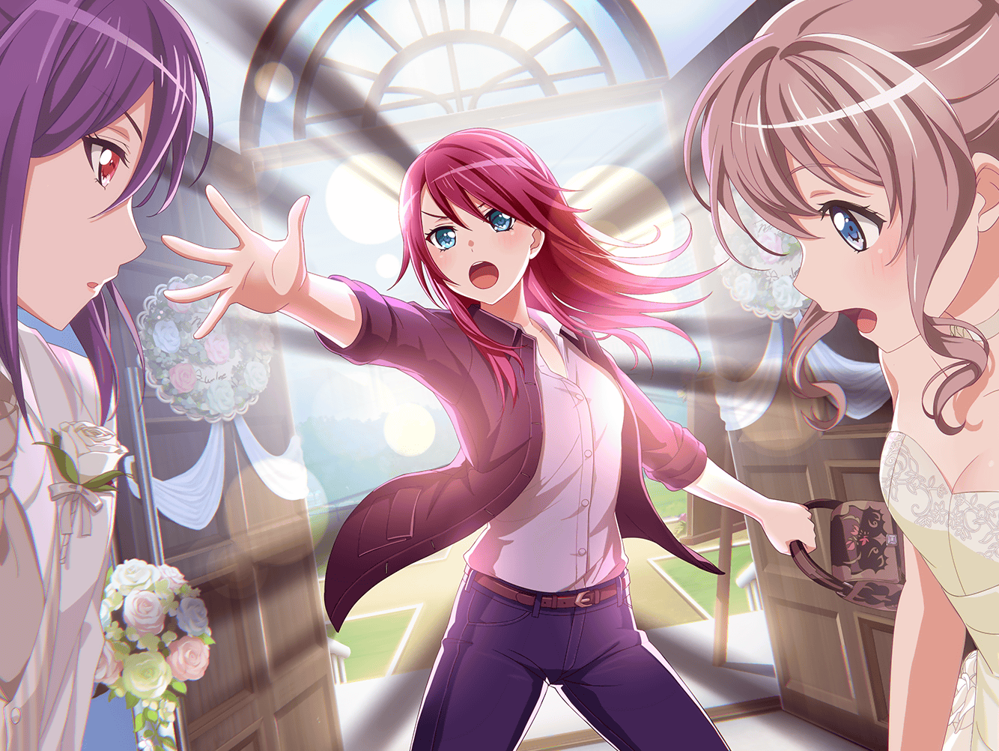

公園
あこ
そこでね、あこがね！
こう、ズバーン！ ってね！
巴
うんうん。
それで？
あこ
そうしたら、
会場がバーッて盛り上がったの！
巴
あっはっは！
よかったなあこ、サイコーじゃないか！
あこ
うん！
最高に決まってたよ！！
あこ
……って、あれ？
ねえねえ、おねーちゃん。
あれって、かおるかな？
巴
……みたいだな
ベンチに座って、何をしてるんだ？
あこ
声をかけてみようよ！
巴
そうだな。
そうしてみるか
あこ
かおる、こんにちは！
薫
ん？
子猫ちゃんかと思ったら
あこちゃんと巴ちゃんじゃないか
巴
こんにちは、瀬田先輩。
こんなところでどうしたんですか？
薫
たいしたことではないんだけど、
今日は部活もバンドも休みでね
薫
自主練習もひと段落したから、
こうして、暇を持てあましているのさ
あこ
さすが、かおる！
なんか、カッコイイー！
巴
そうだったんですね。
最近、調子はどうですか？
薫
演劇かな？
それとも、バンドかな？
巴
えーっと……
じゃあ、両方で
薫
バンドは最高さ。あんなにいいメンバーが揃っているんだ。
演劇は……そうだな
巴
もしかして、不調なんですか？
薫
いや、そんなことはないよ。
むしろ、調子がいいくらいさ
薫
ただ、課題があってね
巴
瀬田先輩に課題……ですか？
薫
ああ。
最近、撮影会をしたのは覚えてるだろう？
巴
撮影会？
結婚式のモデルのやつですか？
薫
そうそう。
それさ
薫
あの時に学んだものを
演劇に使いたくてね。
どうやって使おうか、悩んでるんだよ
あこ
結婚式のモデルのやつ？？
あこ
……ああ！ 思い出した！
さーやとかおるの撮影のやつだ！
薫
そうそう。
巴ちゃんとあこちゃんが突撃してきたアレだ
巴
うっ……！
あ、あれは……ほ、本当にすみませんでした
薫
いや、責めてるわけではないよ。
ああいうハプニングがあってこその人生だからね
巴
アハハ……
そう言ってもらえると、助かります
あこ
でもでも！
あこもおねーちゃんもすごくビックリしたんだよ！
巴
確かに。
本当に沙綾と瀬田先輩が結婚するのかと
思いましたよ
薫
おや、そんなにお似合いだったかな？
ふふ、うれしいことを言ってくれるね
薫
しかし繰り返しになるが、
まさかドラマみたいに巴ちゃん達が
突撃してくるとは思わなかったよ
薫
あの時の私の気持ちはそうだな……
さながら、ドラマで花嫁を奪われる
花婿のようだったよ
巴
……確かにアタシが突撃した時
沙綾を守ろうとしてましたもんね
薫
子猫ちゃんを守るのは
騎士（ナイト）の仕事だろう？
あこ
か、カッコいい……！！
薫
あこちゃん、私はね……
今回学んだ事を生かして、さらに上を目指すことにするよ
薫
どう使えるかはまだ悩んでいるが、
私ならきっと、あの経験を糧にできるだろう
あこ
あ、あこだって！
もっとカッコよくなれるように頑張る！
巴
あぁ
巴
あこならなれるさ。
なんたって、アタシの妹なんだからな
あこ
おねーちゃん！！
よーし！ やる気出て来た！
薫
なら、どっちがカッコよくなれるか、
私と勝負だね？
あこ
え！？
かおると勝負！
あこ
わ、わかった。
あこ、絶対負けない！
巴
ハハッ！ 頑張れよ、あこ
あこ
うん！
まかせてよ、おねーちゃん！
薫
ふふ、人は競い合うことで成長する……
薫
うれしいね。
あこちゃんと勝負することで、
私はまたさらなる高みに昇りつめるだろう